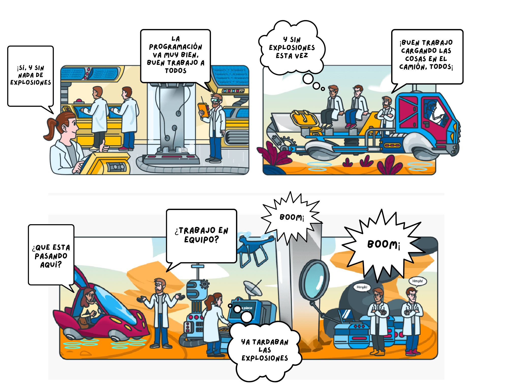

Trabajo en equipo
la normativa de trabajo en equipo en el código ético del ingeniero de sistemas destaca la importancia de la colaboración interdisciplinaria y el valor de la sinergia entre profesionales. Al desarrollar habilidades de trabajo en equipo y cultivar relaciones sólidas con otros expertos, el ingeniero de sistemas contribuye de manera significativa al crecimiento y éxito de la empresa, así como al progreso de la sociedad en su conjunto.
